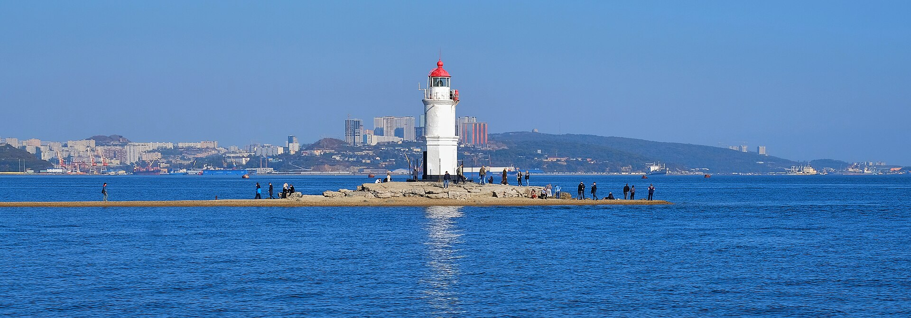

Выход из города
Яхту берите с лицензией и заранее. Старт из яхтенной марины Амурского залива. По пути — вид на Русский мост уже с воды, а не с эстакады.
День 03 из 10
Первый морской день. Остров Попова в архипелаге императрицы Евгении, музей морского заповедника и ужин в BENUAR на набережной.
Яхту берите с лицензией и заранее. Старт из яхтенной марины Амурского залива. По пути — вид на Русский мост уже с воды, а не с эстакады.
Высадка на Попова: тропы, бухты и музей Дальневосточного морского заповедника «Природа моря и её охрана». Часть соседней акватории заповедна, капитан знает, где вставать нельзя.
Возвращение к ужину. BENUAR — Корабельная набережная, 10, Vladivostok Grand Hotel & SPA. Терраса смотрит на бухту. По пятницам и субботам ресторан работает со сценической программой.
Остров Попова лежит к юго-западу от Владивостока, в той же группе островов, что Рейнеке и Рикорда. Назван в честь адмирала Андрея Александровича Попова. До него около часа ходу при спокойном море. Это не круиз с палубой и гидом в микрофон: небольшой борт, открытая вода, высадка там, где позволяет погода.
На острове с 1970-х работает экспозиция Дальневосточного морского биосферного заповедника. Заповедник — единственный в России морской. Его акватория в заливе Петра Великого закрыта для свободных высадок, и это стоит проговорить на яхте вслух: смотреть можно, вставать на якорь в ядре заповедника нельзя. Музей на Попова как раз объясняет, что именно здесь охраняют.
День зависит от ветра. Если волна не пускает к острову, честный запасной план — Рейнеке или длинная прогулка по Амурскому заливу без высадки. Не геройствуйте у скал ради галочки в маршруте.
BENUAR закрывает день на той же Корабельной, где вчера стояла С-56. Кухня итальянская и средиземноморская, зал рассчитан на вечер, а не на быстрый ужин после экскурсии. В будни это ресторан, в пятницу и субботу — ресторан с программой шоу-балета. Выбирайте день недели сознательно: кому-то нужен тихий стол с видом на воду, кому-то вечер допоздна.
Завтра тот же остров Русский, но другая его сторона: не кампус, а батареи и мыс.
